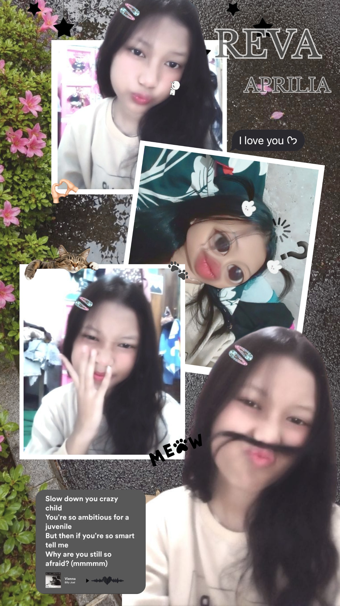

hallo ini adalah website yang aku buat sendiri di VScode dan dijalankan dengan Github
Sebelumnya perkenalkan dulu, namaku adalah Reva Aprilia Eka Putri, biasanya aku dipanggil Reva. Disini aku akan cerita sedikit tentang aku.
ini adalah aku

Aku adalah pribadi yang aktif sekali, ceria, dan banyak rasa ingin tahu. Aku sekarang sedang belajar di SMK Negeri 1 Nglegok, aku mengambil jurusan TKJ. Di TKJ sini aku dibelajari banyak sekali hal yang menarik dan unik yang sebelumnya aku belum pernah belajar dan belum pernah mencoba, disini aku menjadi mengerti apa saja bagian-bagian dari komputer, apa itu pemrograman, apa itu IT, apa itu yang di namakan server, dan masih banyak lagi yang di ajarkan disini. Aku bangga menjadi bagian dari SMK Negeri 1 Nglegok.
SMK Negeri 1 Nglegok tidak hanya mengajarkan tentang teknologi tetapi, disini diajarkan juga apa itu tanggung jawab, kedisiplinan, karakter yang baik, menjadi anak yang jujur, sampai di latih juga fisiknya agar siap terjun ke dunia kerja. Didunia kerja tidak hanya membutuhkan kemampuan teknis, tetapi juga kemampuan interpersonal dan etika kerja yang baik. Jadi belajarlah bersungguh-sungguh agar nanti bisa bekerja di kantor yang ingin dituju.
Sebenarnya aku nantinya aku ingin menjadi seorang programmer yang handal, tetapi aku juga ingin pergi ke Jepang umtuk belajar menjadi pribadi yang mandiri dan lebih bertanggung jawab.